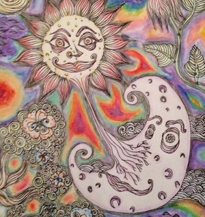

A little bit after my review, spring semester of my sophomore year, I went outside just to draw for pleasure. I didn’t have a particular goal in mind so I just drew what I felt like drawing. I still find it funny how on a sunny spring day I managed to come up with a drawing I refer to as “The Mermaid of Death.”